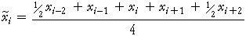

Moving averages
We showed in the first section of this chapter that moving averages are effective for reducing the random fluctuations in a time series.
Moving averages can also be used to remove a seasonal effect, but the run length is critically important.
| For seasonal data with cycle length n, an n-point moving average should be used. |
For example, daily data have a cycle length of 7 days. Each 7-point running mean averages exactly one value from each day of the week (one value of each colour in the diagram below).
If, say, Saturday values are regularly lower than other days, the smoothed values for each day of the week will involve a Saturday and will be equally affected. The smoothed values for Saturdays will therefore not tend to be lower than other days. This removes the seasonal pattern.
Even cycle lengths
Unfortunately there is a complication when seasonal data have an even cycle length (such as monthly data with a cycle length of 12) since we have not defined what is meant by an n-point moving average where n is even. A 4-point moving average is defined to be

with similar definitions for other even values of n, using half-weights on the two end values. Note that a 4-point moving average therefore involves 5 values, not 4.
International tourists in Hawaii
This diagram again shows the numbers of international tourists in Hawaii.
Use the control under the plot to investigate the effect of different moving averages.
Observe that 6-point moving averages remove most of the seasonal effect since there are two peaks each year. However the two halves of the annual pattern are unlikely to be identical, so we should treat the series as having a 12-month seasonal pattern and use 12-point moving averages.
After removing the seasonal pattern in this way, the trend in tourist numbers becomes much clearer.